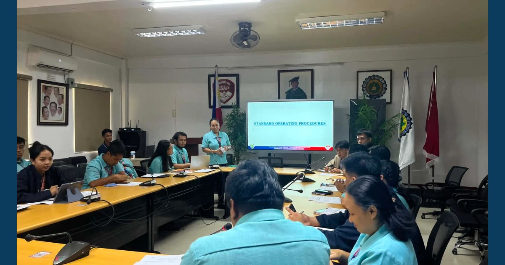

Strengthening Research Through Shared Direction

The MCNP–ISAP Research and Development Center convened its General Assembly 2026 on August 24, bringing together RDC personnel and research focal persons to revisit research processes and discuss the Institutional Research Agenda, RDC Strategic Plan 2026–2030, and Operational Plan for Academic Year 2026–2027.
Read full article